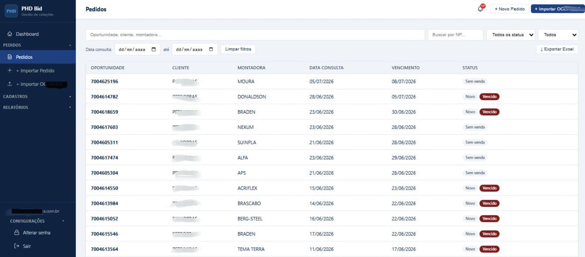
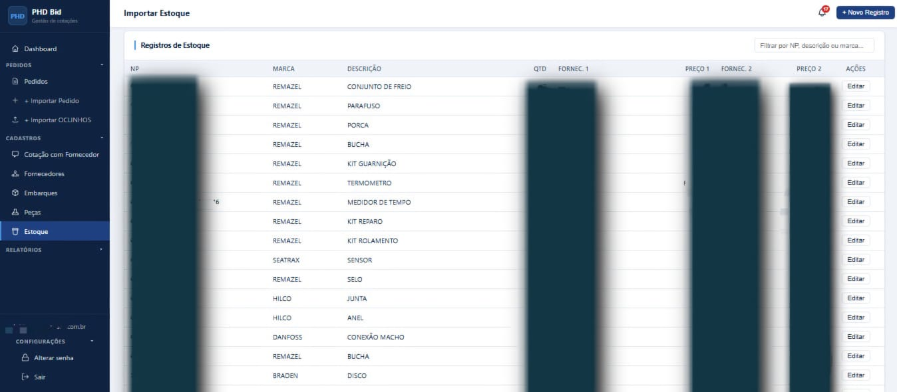
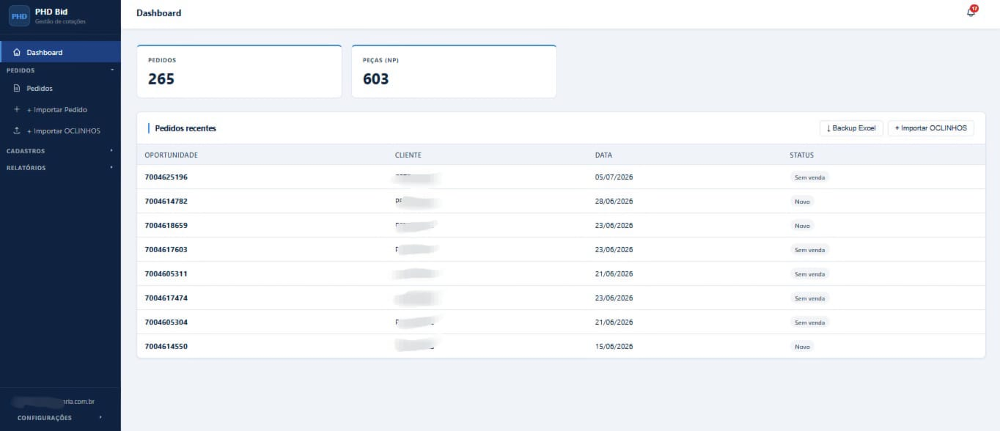

Product Owner
PHDbid
Sistema web de gestão de cotações, embarques e margens para operação de comércio exterior. Responsável pelo produto, requisitos, fluxo de dados e homologação — desenvolvido por parceiro terceirizado.
Contexto: Histórico comercial vivendo em planilhas inconsistentes, sem regras de negócio operando no sistema. Ação: Defini requisitos (fatores de margem, alertas de vencimento), priorizei funcionalidades, conduzi migração de dados (tratando inconsistências de formato e moeda) e executei migrations SQL em homologação e produção.
Resultado: Base de dados consolidada, validada e confiável; regras de negócio operando no sistema; escopo mantido enxuto por decisões conscientes de priorização.